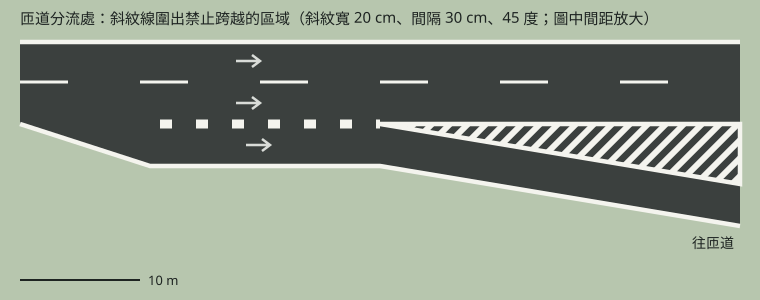

槽化線 第171條
引導車輛依指示路線行駛，並禁止跨越。

規格
| 類別 | 禁制標線 |
|---|---|
| 顏色 | 同所連接的線（白或黃） |
| 線型 | 單實線／Y型線／斜紋線 |
| 尺寸 | 單實線：線寬 15 公分。Y型線：線寬 15 公分。斜紋線：周圍邊線寬 15 公分，斜紋線寬 20 公分、間隔 30 公分，斜 45 度。顏色與所連接的行車分向線、分向限制線或車道線相同。 |
意義
引導車輛依指示路線行駛，並禁止跨越。
設置地點
交岔路口、立體交岔的匝道口或其他特殊地點。
跨越或通行
禁止跨越。
常見誤解
- 槽化線的顏色不是固定白色，而是跟著所連接的線走：接車道線就是白色，接分向限制線就是黃色。
- 兩車道以上的匝道在分流或匯流處只畫一組槽化線，不是每個車道各畫一組。（本站繪圖慣例，依實景配置）
出處
道路交通標誌標線號誌設置規則（民國115年03月11日修正）第171條。全國法規資料庫原文
本頁為條文整理，用字以原文為準；標「整理說明」者為本站補充。最後更新：2026-11-13